Infographie sur TikTok réalisée en cours de communication digital.
Réalisé sur Figma
Infographie TikTok
Infographie sur TikTok réalisée en cours de communication digital. Utilsation de la charte graphique tiktok et de son logo. Informations à but de l'utilisation de la plateforme pour un meilleur contrôle sur le calendrier éditorial de publication d'une marque ainsi que sa cible.
Réalisé sur Figma
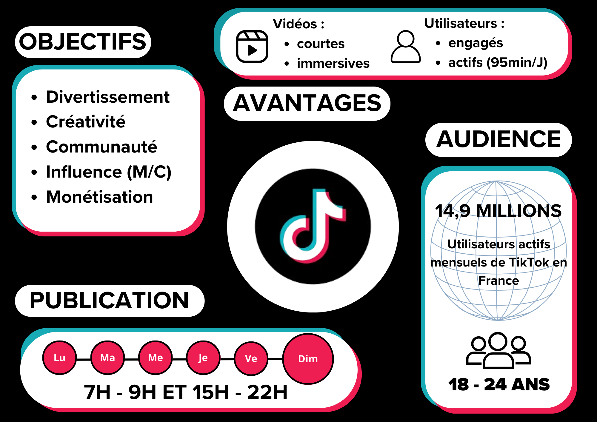
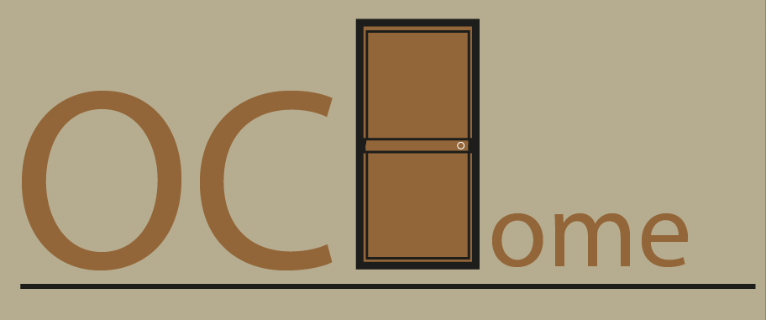
Logo d'une entreprise fictive de personnalisation de porte d'entrée.
Réalisé sur Adobe Illustrator
Logo OCHome
Logo d'une entreprise fictive de personnalisation de porte d'entrée. Utilisation de la couleur orange pour la chaleur et le dynamisme, le gris pour la neutralité et la sobriété. La porte d'entrée est un élément important pour une maison, elle est le premier élément visible. Le logo doit donc être simple, lisible et représentatif de l'activité de l'entreprise.
Réalisé sur Adobe Illustrator
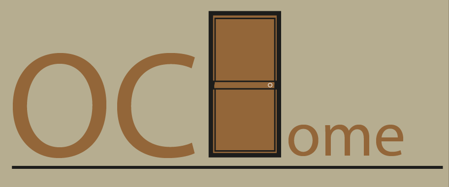
Réalisation inspirée de Kunel Gaur, une boite de flageolets.
Réalisé sur Adobe Illustrator et Photoshop
Réalisation Kunel Gaur
Réalisation inspirée de Kunel Gaur, une boite de flageolets. Utilisation de la couleur verte pour le flageolet, le marron pour le bois et le blanc pour la propreté. La boite est un élément important pour la conservation des aliments, elle doit donc être hermétique et pratique. Le design doit donc être simple, lisible et représentatif du produit.
Réalisé sur Adobe Illustrator et Photoshop
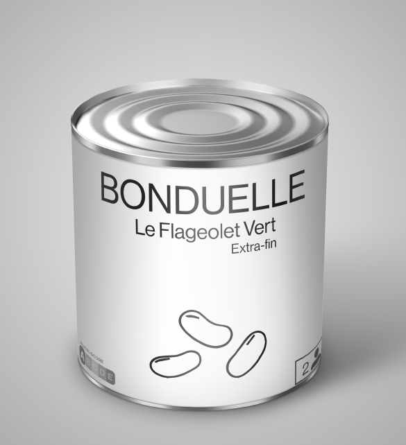
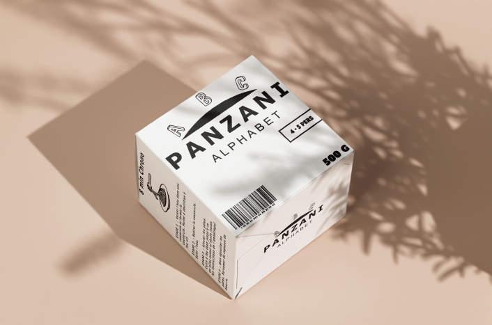
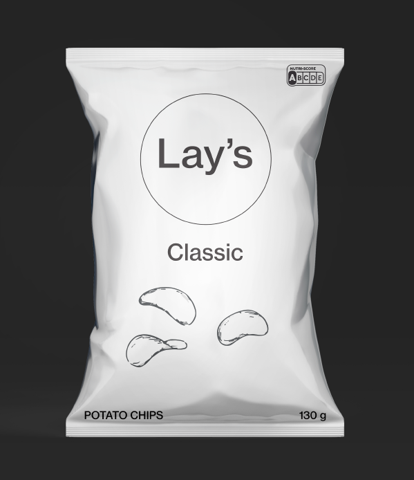
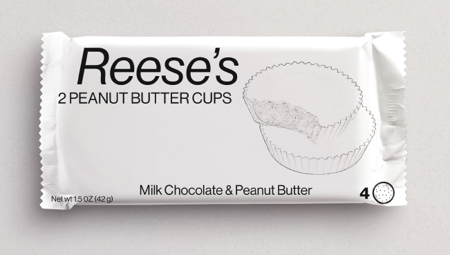
Mise en place d'élément sur Indesign, création de double page de présentation de chef de cuisine et recette attribuée.
Réalisé sur Indesign
Réalisation Indesign présentation gastronomique
Mise en place d'élément sur Indesign, création de double page de présentation de chef de cuisine et recette attribuée.
Réalisé sur Adobe Indesign
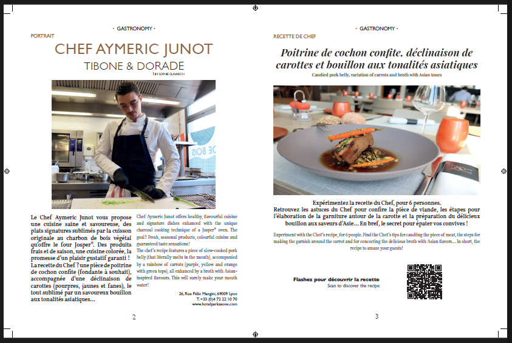
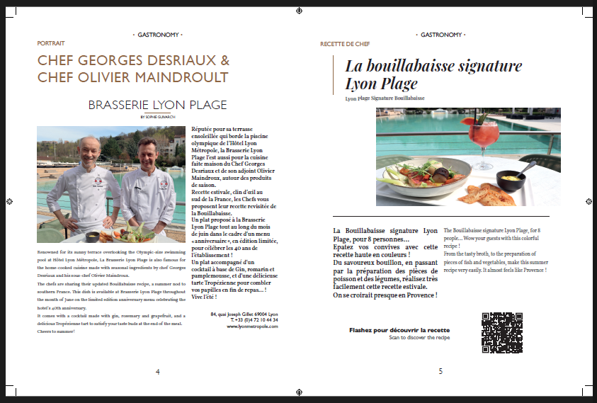
Projet de mod Minecraft personnel, création de texture, model 3D, procédures(fonctions), paramétrage, interface visuelle
Réalisé sur MCreator et Blockbench 3D
Création, configuration entière d'un site internet appelé SIKALOBI, une association au service de Kinshasa et basée à Nancy.
Réalisé sur Wordpress, Elementor Pro
Réalisation d'un site internet complet
Dans le cadre d’un projet de groupe, nous avons conçu le site web d’une association sous WordPress avec Elementor et refondu son identité visuelle. En contact direct avec l’association, nous avons créé un design moderne et intuitif, défini une nouvelle charte graphique (logo, couleurs, typographies) et intégré des fonctionnalités clés (actualités, événements, formulaire de contact). Ce projet nous a permis de travailler sur l’expérience utilisateur, la cohérence visuelle et la gestion de projet en collaboration avec un client réel.
Réalisé sur Wordpress, Elementor Pro
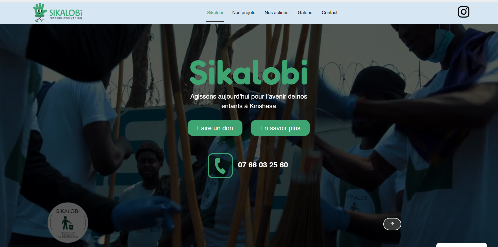
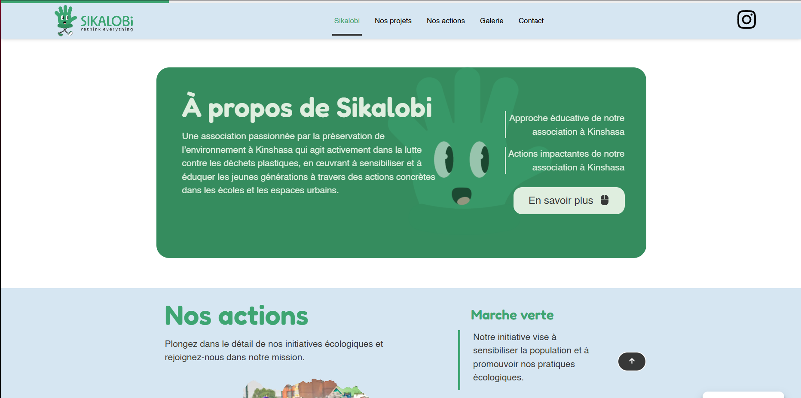
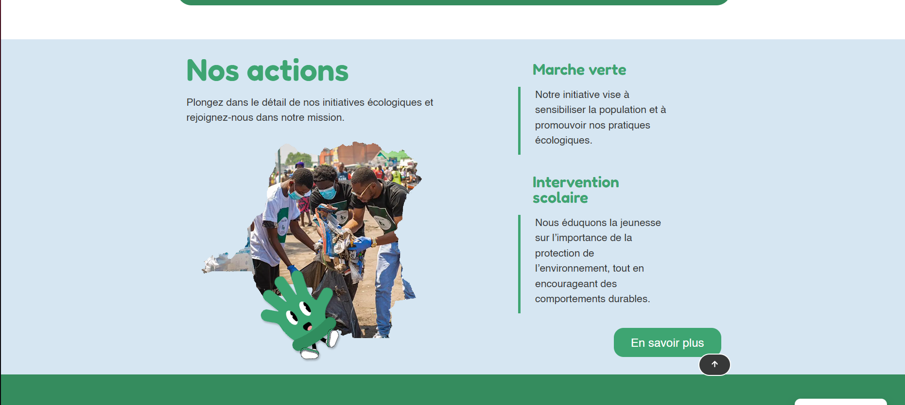
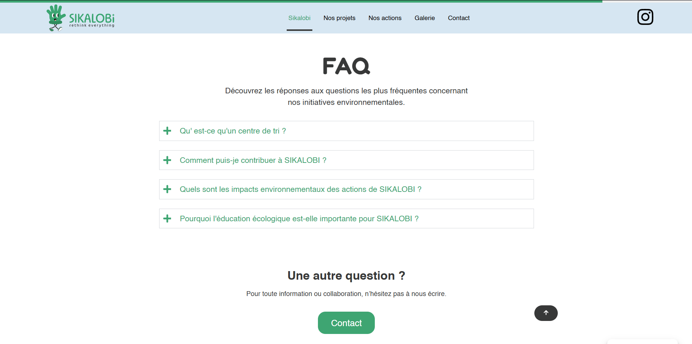
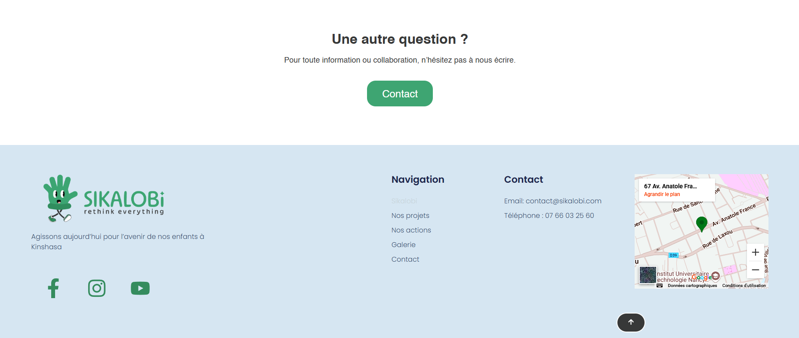
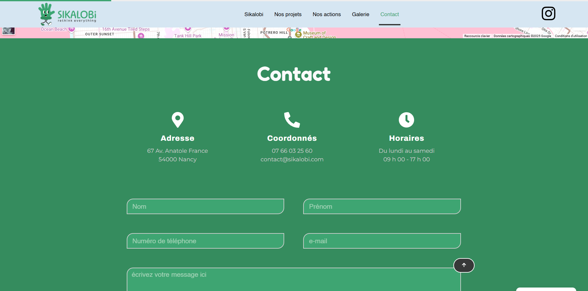
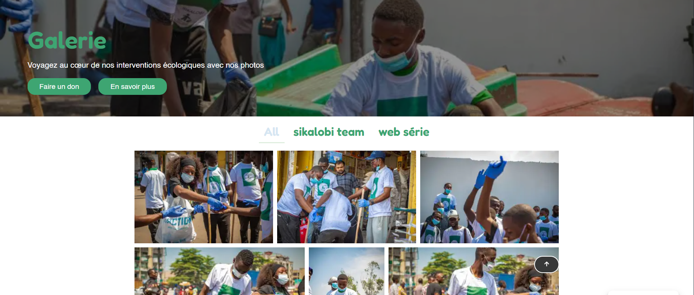